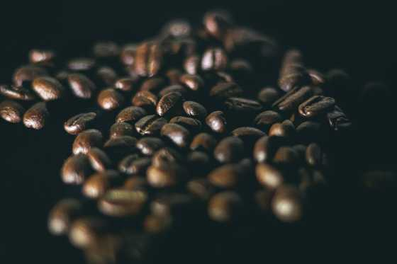
大阪府豊中市庄内西町 / 自家焙煎珈琲・手作りデザート
夜にともる灯りのそばで、
焙煎したての一杯を。
珈琲焙煎工房 全は、庄内で自家焙煎の珈琲と手作りのデザートを楽しめる小さな工房のようなお店です。
お店のこと
焙煎する工房で、ゆっくり過ごす。
お店のInstagramとThreadsのプロフィールには、「大阪の庄内で自家焙煎珈琲をやっているものです。」「自家焙煎珈琲 手作りデザート」と紹介されています。投稿には「スペシャルティコーヒー」「手作りデザート」「夜喫茶」といったハッシュタグも添えられており、珈琲とデザートを味わう、夜も楽しめる喫茶のお店であることがうかがえます。
屋号の「珈琲焙煎工房」のとおり、豆を焙煎するところから手がける工房としての姿を大切にしたお店です。
情報源: Instagram @coffeeroastingfactorymasa / Threads
「全」という店名の由来・意味、オーナーさまの想いは確認できなかったため、書いていません。「夜にともる灯り」というコンセプトは、夜喫茶のハッシュタグから制作側がイメージした表現です。

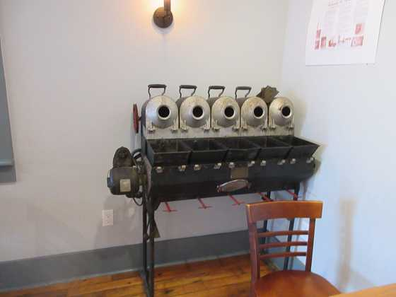
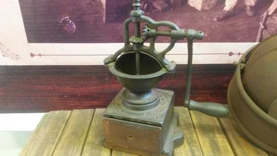
メニュー
自家焙煎珈琲と、手作りデザート。
提供内容として確認できたのは「自家焙煎珈琲」と「手作りデザート」までです。具体的な品名・価格・営業時間は準備中です。下の写真はイメージです。
自家焙煎珈琲
生豆から焙煎した珈琲。品名・価格: 準備中
手作りデザート
お店で手作りされているデザート。品名・価格: 準備中
コーヒー豆
豆の販売の有無: 準備中
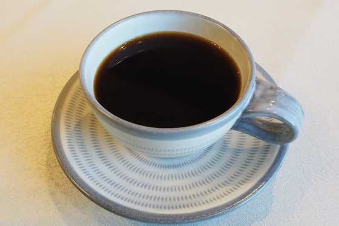

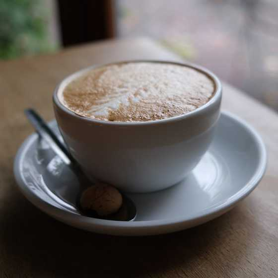

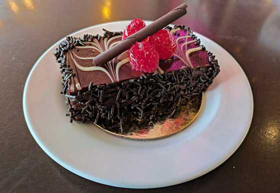
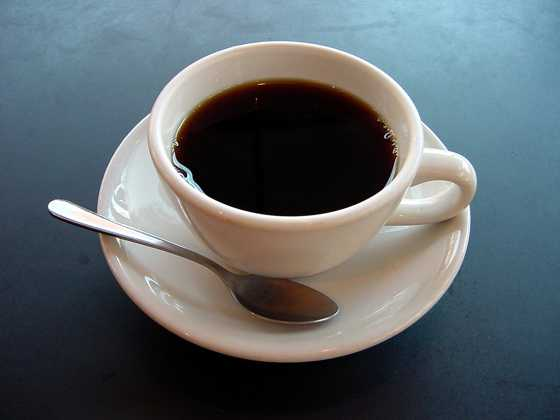
口コミ
こんな声が届きそうです。
イメージ例 以下は制作側が作った例文で、実在のお客さまの声ではありません。
仕事帰りの一杯に
遅めの時間でも立ち寄れて、焙煎したての香りに気持ちがほどけました。(イメージ例)
デザートとの相性
手作りのデザートと珈琲を一緒にいただくと、ゆっくりした気分になれます。(イメージ例)
豆のことを聞いてみたい
焙煎の工房らしく、豆の話を聞いてみたくなる雰囲気でした。(イメージ例)
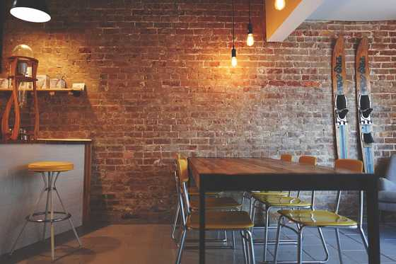
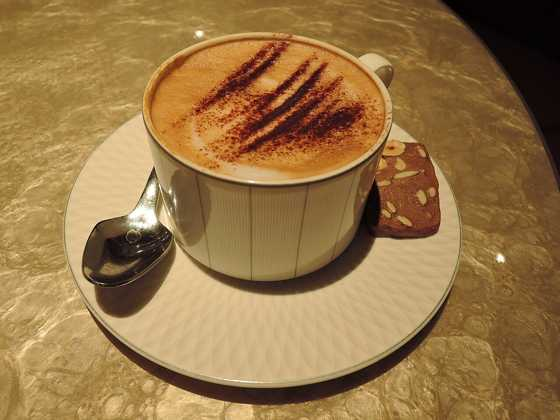
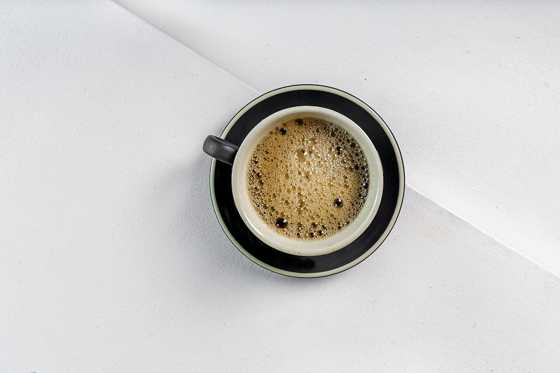
アクセス
庄内西町の住宅街で。
| 店名 | 珈琲焙煎工房 全 |
|---|---|
| 所在地 | 大阪府豊中市庄内西町2丁目9-22 |
| 電話 | 準備中 |
| 営業時間 | 準備中 |
| 定休日 | 準備中 |
| @coffeeroastingfactorymasa |
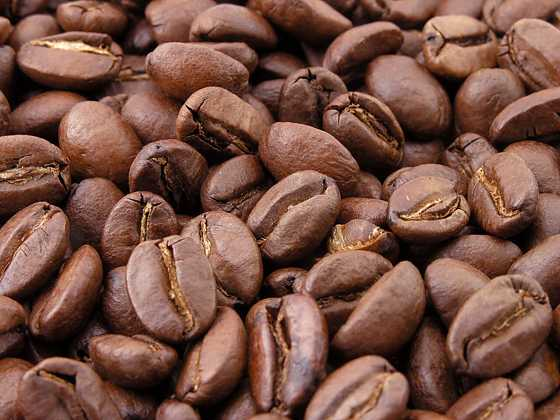
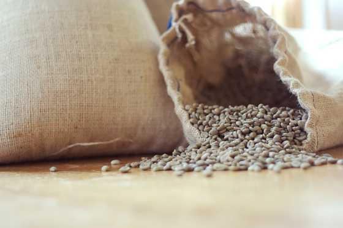
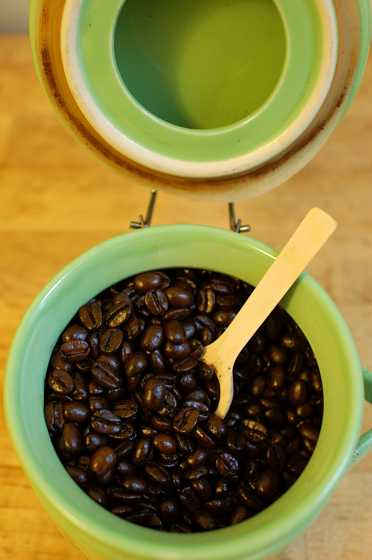
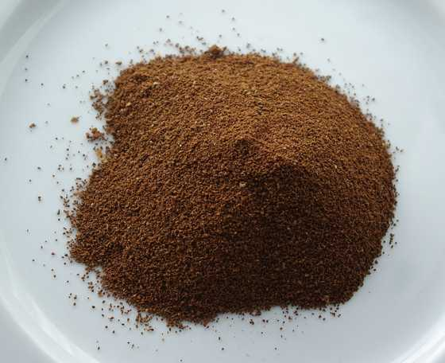